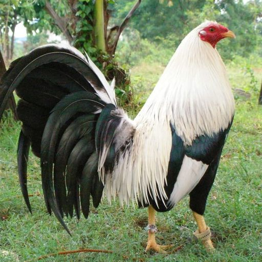
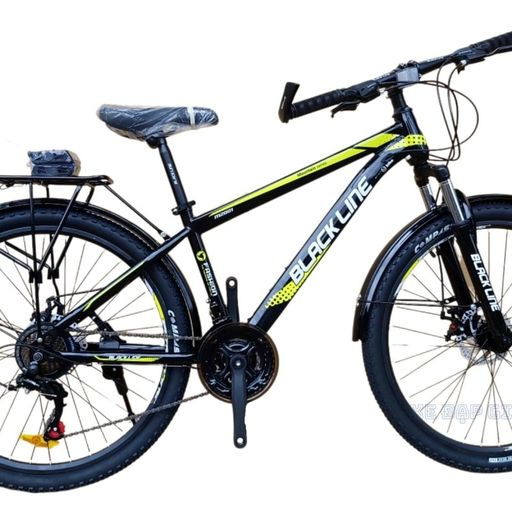
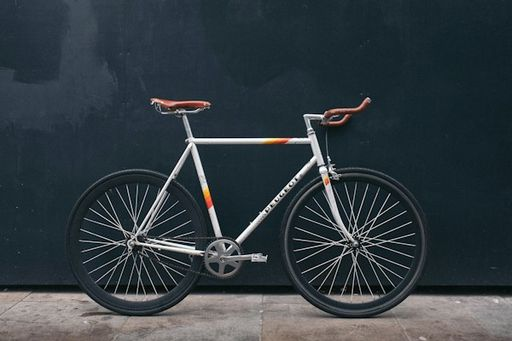
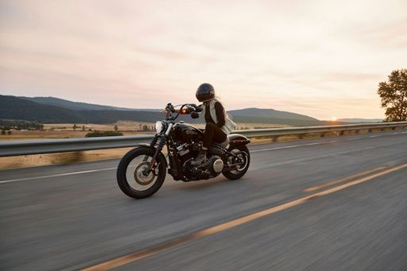

Ảnh truy vấn được chọn thủ công từ Wikimedia Commons. “Đúng” nghĩa là ảnh và loại sản phẩm phù hợp; nhãn chưa xác thực mẫu mã hoặc tình trạng thực tế của món hàng. Đây là bộ kiểm thử nhỏ để phát hiện lỗi, không phải số đo độ chính xác chung của hệ thống.
Mỗi cột là một lần chạy. Bộ lọc cũ cũng từng đạt 5/6 ở lần thử khác, nên chênh lệch 4/6 → 5/6 ở đây chưa chứng minh mức cải thiện ổn định. Ảnh truy vấn là ảnh chụp thumbnail của trang tìm kiếm, độ phân giải thấp.
| Chỉ số | Trước | Sau |
|---|---|---|
| Truy vấn có ít nhất một tin đúng | 4/6 | 5/6 |
| Thẻ sản phẩm đúng | 4 | 5 |
| Thẻ sản phẩm sai | 1 | 1 |
| Trả hàng sai khi không có hàng | 0/1 | 0/1 |
Vấn đề dữ liệu: tin mũ bảo hiểm xe đạp có ảnh người lái xe máy; tin Twitter Mantis ghi xe đạp địa hình nhưng ảnh là xe đường phố. Cần ảnh thật đúng sản phẩm và lập chỉ mục lại trước khi dùng hai tin đó để huấn luyện.
1. tìm gà đá
Tin đúng theo nhãn

Kết quả sau chỉnh sửa
Trước chỉnh sửa: gà đá
2. tìm chào mào

Tin đúng theo nhãn

Kết quả sau chỉnh sửa
Trước chỉnh sửa: chào mào đại bàng
3. tìm xe đạp địa hình
Tin đúng theo nhãn

Kết quả sau chỉnh sửa

Trước chỉnh sửa: xe đạp địa hình ; Xe đạp địa hình thể thao Twitter Mantis khung nhôm phanh đĩa dầu
Cần xem dữ liệu: Tin Twitter Mantis ghi xe đạp địa hình nhưng ảnh catalog là xe đạp đường phố, nên không tính là khớp ảnh.
4. tìm mũ bảo hiểm xe đạp
Tin đúng theo nhãn

Kết quả sau chỉnh sửa
Không trả sản phẩm — bỏ sót
Trước chỉnh sửa: Không có
Cần xem dữ liệu: Ảnh catalog của tin mũ bảo hiểm xe đạp là người lái xe máy; cần sửa ảnh tin trước khi dùng làm nhãn train.
5. tìm vợt cầu lông


_Reunion.jpg){kind=link}
_20100814.jpg){kind=link}


Tin đúng theo nhãn

Kết quả sau chỉnh sửa
Trước chỉnh sửa: Không có
6. tìm thảm tập yoga

Tin đúng theo nhãn

Kết quả sau chỉnh sửa
Trước chỉnh sửa: Thảm tập Yoga định tuyến TPE chống trượt 8mm cao cấp kèm túi đựng
7. tìm máy bay
Ảnh truy vấn

Tin đúng theo nhãn
Không có sản phẩm phù hợp
Kết quả sau chỉnh sửa
Không trả sản phẩm — đúng vì không có hàng
Trước chỉnh sửa: Không có